GFPP claims to have positive impacts on local economies, environmental sustainability, food chain workers, animal welfare, and the nutritional content of food served. Ideally, we would like to test the impact of GFPP in all these five areas. However, the availability of data only allow us to test whether the population's physical fitness benefit from the nutritional standard set by GFPP. We do have county level data of food business sale volumn and labour force, but since LA is the only county that has adopted GFPP, we do not have enough sample to construct a treatment group, not to mention that we'll need a large sample to study the spillover effect of shifting food purchase towards local farmers.
The adoption of GFPP by the LA Unified School Districts provides us with a chance to study GFPP's impact on students' phsical fitness. Among all the 6 student fitness areas (table 1) monitored by California state, we are most interested in students' finess change in Body Composition. This is because better food quality and a more balanced diet brought by GFPP do not necessarily tranaslate to improved body functions such as higher adrobic capacity, or improved athletic abilities such as stronger abdominal and back muscel. However, we believe students' body composition, such as fat percentadge expressed in skinfold measurement or BMI (Body Mass Index), do respond and respond faster to a diet improvement. Therefore, we expect to see a higher fraction of students meeting the healthy body composition standand a few years after the policy was implemented.
| Fitness Areas | |
|---|---|
| Aerobic Capacity | (AC) |
| Abdominal Strength & Endurance | (AS) |
| Upper Body Strength | (UBS) |
| Body Composition | (BC) |
| Flexibility | (F) |
| Source: https://www.cde.ca.gov/ta/tg/pf/ |
Pysical Fitness Test (PFT) is conducted in every LA school annually on grade 5,7 and 9, giveing us a good panal data of students' fitness test result. However, complexity lies in that test standards were adjusted in year 2006 and 2011. We plotted the testing result to double check whether the change of test standards has caused significant disruptance in testing score.
| Before resampling | After resampling |
| 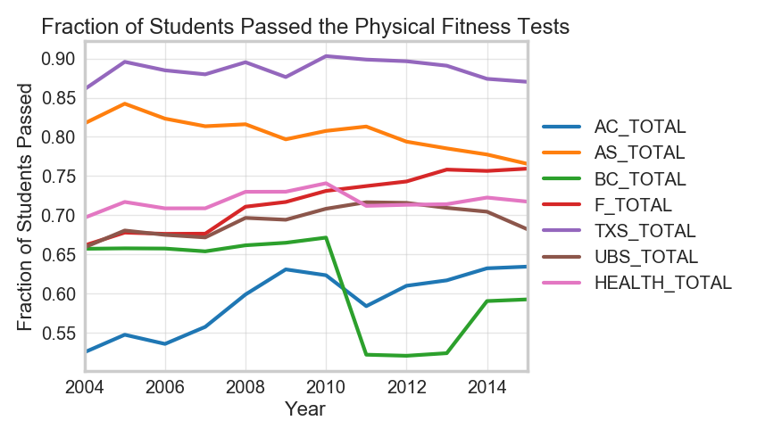 | 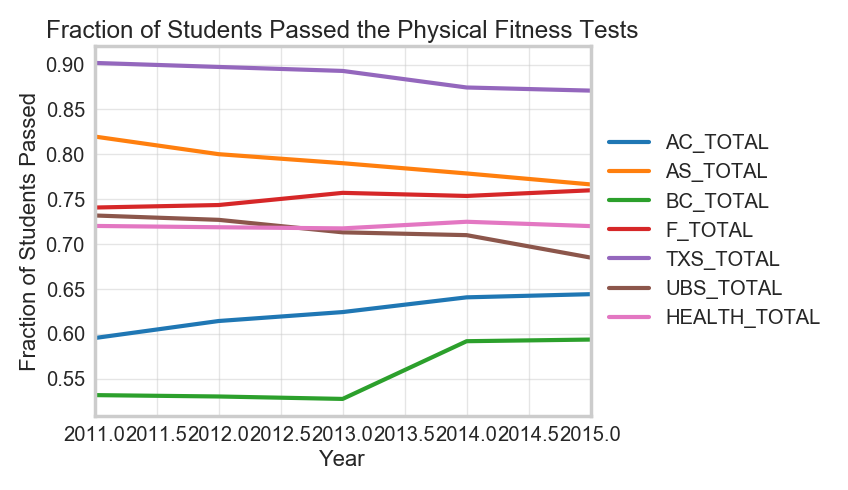 |
| 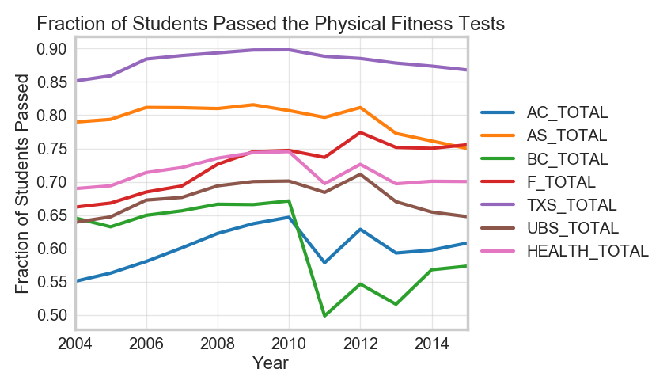 | 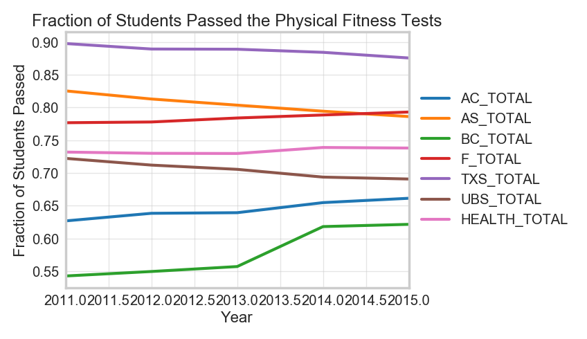 |
As seen from the plots above, the test standards change in 2011 does cause some fitness measurement to plunge. Due to lack of expertise in realigning physical test scores, we choose to drop historic data until year 2010. In the second column of Table 3 is the trend of fitness test score from year 2011 to 2015.
Before running the regression, we would like to compare the treatment group with the control group to make sure that they are comparable in all other dimensions besides getting the treatment (i.e. GFPP) or not. Namely, we compare the means of covariates used in our regressions between the treatment and the control group. In the following, we list the covariates we use, and apply the baseline analysis.
| School Size | Total Enrollment |
| Poverty Ratio | Fraction of students enrolled in Free and Reduced Price Meals Program |
| Female Ratio | Fraction of female students |
| White Ratio | Fraction of white students |
| 2001-2015 | 2011-2015 | |||
| ENR_TOTAL | 882.47 | 942.30 | 865.85 | 876.84 |
| FEMALE_COUNT | 425.06 | 460.57 | 422.26 | 427.97 |
| FEMALE_RATIO | 0.48 | 0.49 | 0.49 | 0.49 |
| WHITE_COUNT | 180.83 | 146.61 | 172.90 | 189.98 |
| WHITE_RATIO | 0.19 | 0.17 | 0.18 | 0.23 |
| FRPM_COUNT | 515.75 | 586.66 | 521.44 | 462.53 |
| FRPM_RATE | 0.62 | 0.62 | 0.64 | 0.54 |
| Baseline Variables | Control | Treatment |
| School Size | 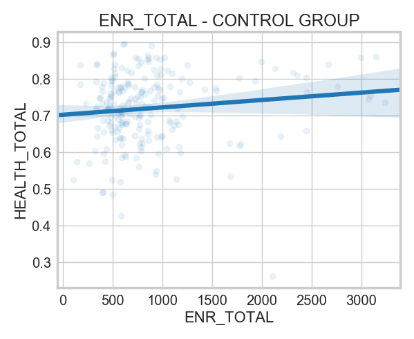 | 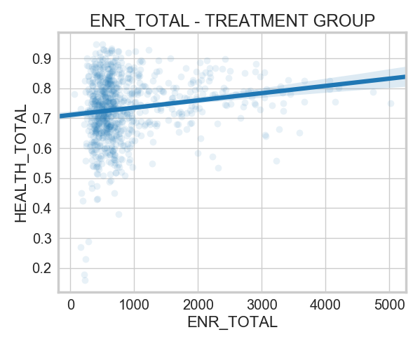 |
| Female ratio | 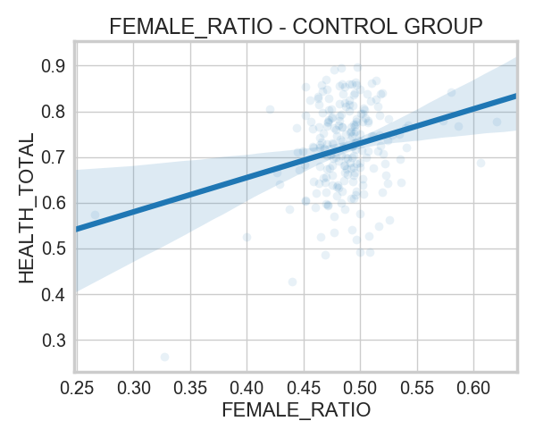 | 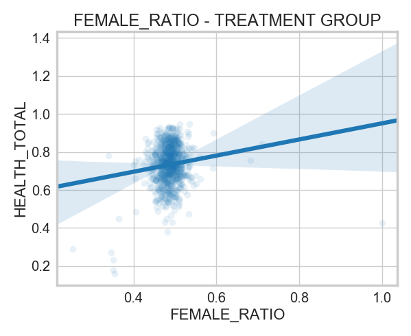 |
| Poverty ratio | 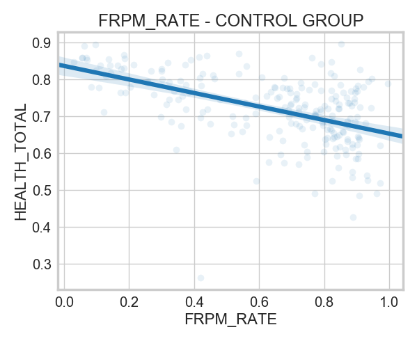 | 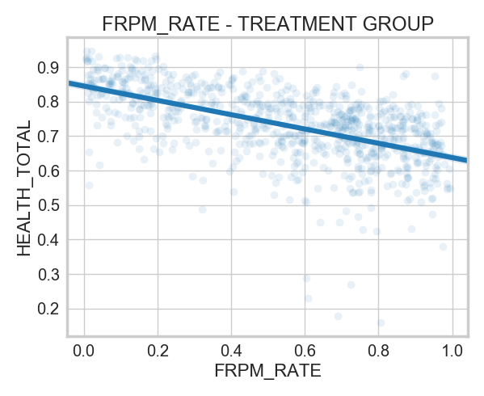 |
| White ratio | 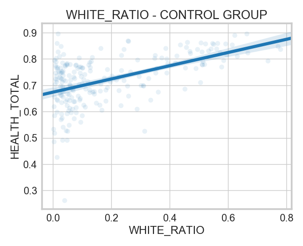 | 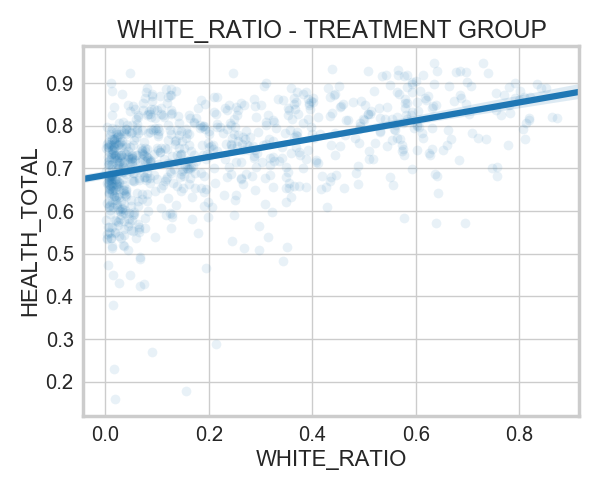 |
Given that change in body composition, as well as in a school's physically-healthy student fraction, has a lot of attributable factors other than the implementation of GFPP. For example, the overall trend towards healthy eating might have an effect on students' food choice when they eat outside of schools, and in turn leads to a change in students' body composition. Also, a change in school curriculum initiated by educational authorities might influence the sports time of every student in the state of California, and thus have an effect on schools' physically-healthy student fraction. All these factors can mess up our estimation of GFPP on schools' physically-healthy student fraction. However, as these factors are common trend that apply for all schools in LA county, we can estimate their aggregated effect by using DiD model.
Since GFPP is only adopted by the Unified School Districts of LA and not in other school districts. We then construct a treatment group with schools in unified school districts and and a control group with schools in other districts. We measure the average physically-healthy students fraction within treatment group and control group. Then we subtract the change in treatment group with the change in control group to get a clean effect of GFPP on physically-healthy student fraction.
Our DiD coefficients are listed in the first two columns of Table 5. The first column is when we use all the data from 2004 to 2015, while the second column is when we use the resampled data from 2011 to 2015. The numbers are not as we expected and are suggesting that the GFPP does not improve students' fitness in 5 out of the 6 major fitness areas. The numbers does show a minor but significant Abdominal Strength improvement in schools that have adopted GFPP. However, we cannot find a logical explanation for this finding.
Besides the coraviates we have controlled for, school may have other indiviaully-invariant attributes that we haven't accounted for. For example, schools have different sports facilities, differnet locations that provide access to different environments. These may also influence students physical fitness level. Therefore, we applied fixed effect method to our DiD model. The result is listed in the third column of Table5. We found the coeffients we found in our DiD model within resampled data are robust.
| 2001-2015 | 2011-2015 | Fixed Effect | |
| AC | -0.0465 | -0.0191 | -0.0191 |
| 0.008 | 0.012 | 0.012 | |
| AS | 2.847e-06 | 0.0066 | 0.0068 |
| 0.007 | 0.013 | 0.013 | |
| BC | -0.0051 | 0.0106 | 0.0108 |
| 0.004 | 0.008 | 0.008 | |
| F | -0.0101 | -0.0062 | -0.0059 |
| 0.006 | 0.012 | 0.012 | |
| UBS | -0.0295 | -0.0024 | -0.0022 |
| 0.007 | 0.014 | 0.013 | |
| TXS | -0.0025 | 0.0035 | 0.0036 |
| 0.006 | 0.012 | 0.012 | |
| HEALTH | -0.0156 | -0.0012 | -0.0010 |
| 0.004 | 0.007 | 0.007 |
Background image source: "http://www.hotel-r.net/im/hotel/es/la-city-1.jpg"